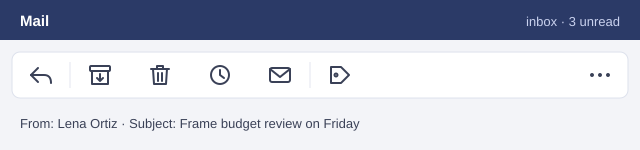

Team · 3 min read
Team week
A short look back at the week: a day out, the numbers from the build, and a tool we started to use.
The park day
On Saturday the whole team met at the park by the river. Everyone brought one thing from home.

The week in numbers
We measured the average frame time of the test level every day on the same machine, with the same camera path.

Lower is better. A frame budget of 16.7 ms gives 60 frames per second.
The new mail app
We moved the team to a new mail app. Its toolbar shows icons only, which took some getting used to.
